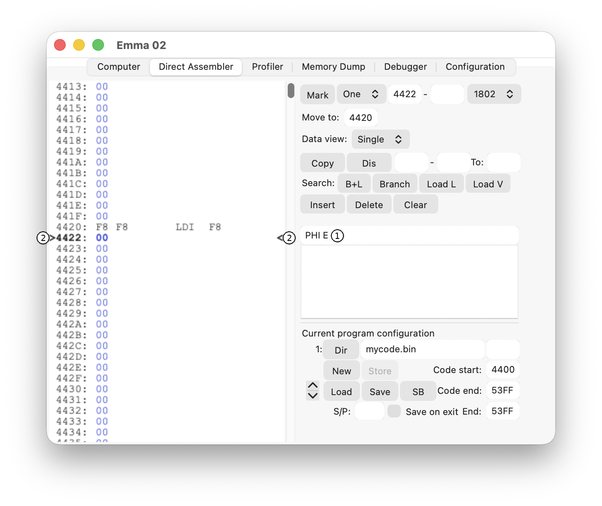
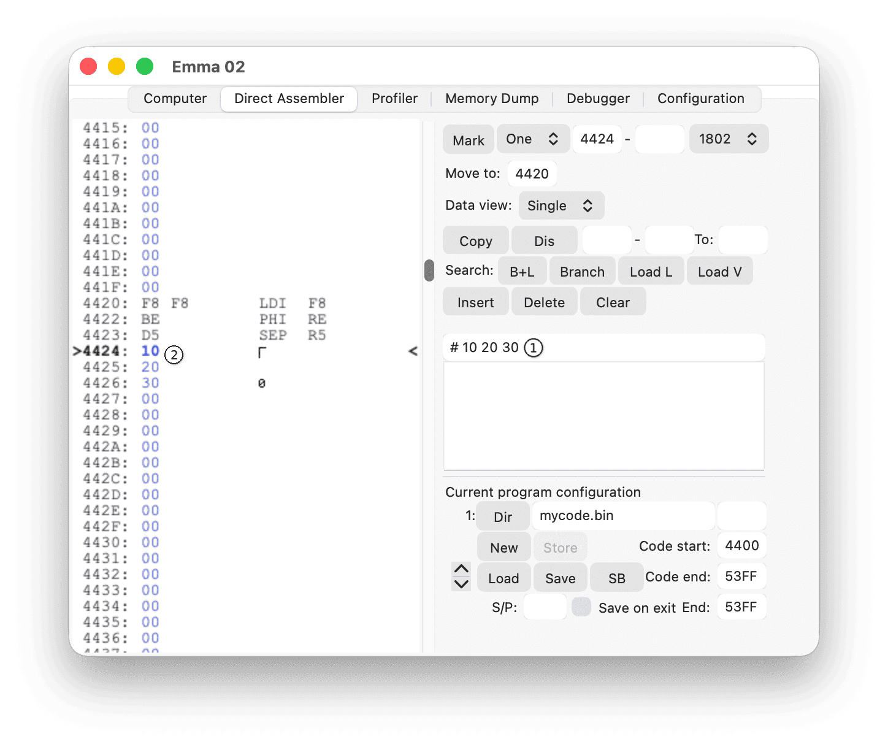
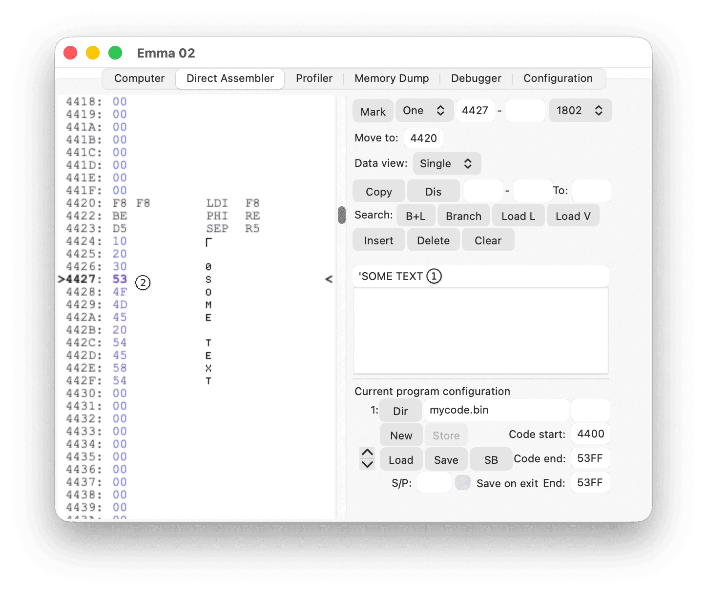
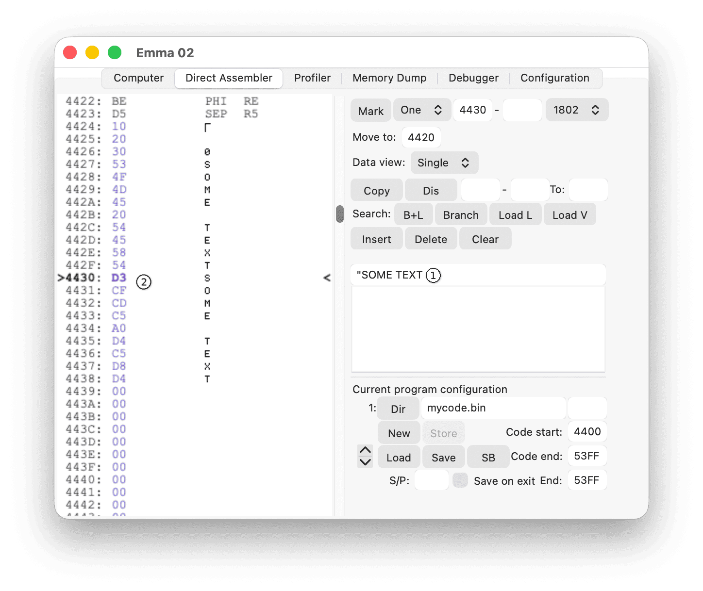
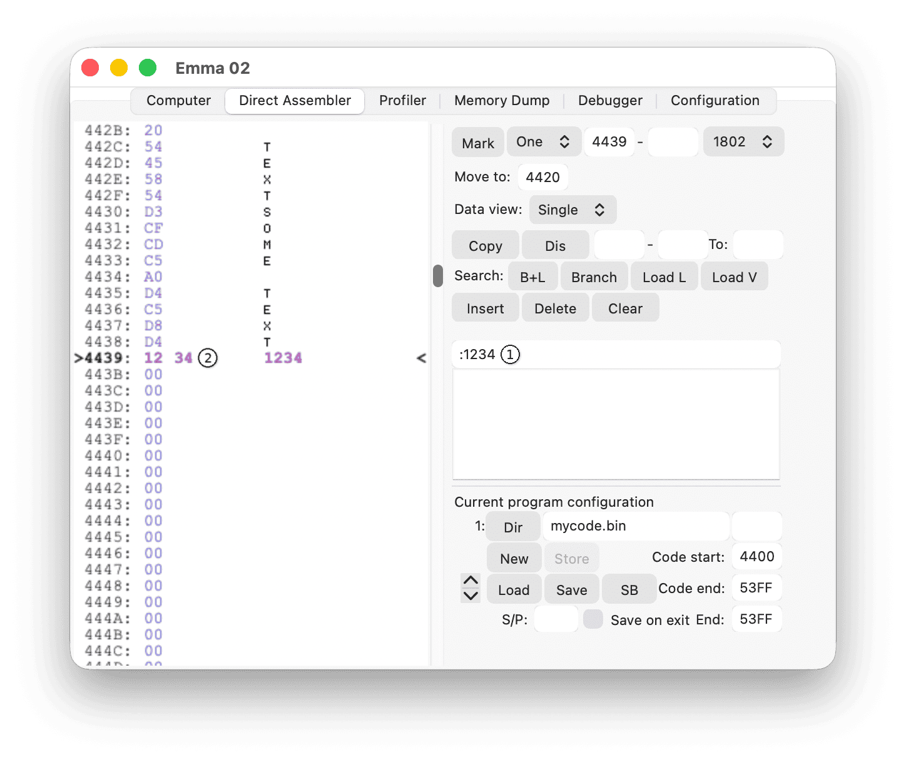

On the command line (1), type in 180x code (SYSTEM00, CDP1801, CDP1802, CDP1804, or CDP1805, depending on which CPU is running). For command syntax, see the Machine Code section. The syntax matches the 180x data sheets.
The current working address is shown in bold, between > and < (2). To change the working address, see the Navigation section.
Note: All data values must be given as hexadecimal values unless preceded by &, in which case the values are interpreted as decimal, i.e., LDI &100 is the same as LDI 64.
To use the pseudo-code assembler, an emulator must be started that runs one of the pseudo codes listed in the Pseudo Code section.
In addition to 180x and pseudo-code, the options described in the following subsections are available from the command line.
Format: #ww xx yy zz
The values ww, xx, yy, zz are hexadecimal and are stored at the current and following working addresses. At least one value (ww) must be specified. Spaces after # and between bytes are optional.
Example: type in # 10 20 30 (1) at address 4424 (hexadecimal); this results in code 10 20 30 at addresses 4424-4426 (hexadecimal) (2):

Other examples:
# 10 stores value 10 at the current address # 20 30 stores 20 at the current address and 30 at the following address
Format: 'text
All text after ' is stored as ASCII code at the current working address.
Example: type in 'SOME TEXT (1) at address 4427 (hexadecimal); this results in ASCII code for SOME TEXT at addresses 4427-442F (hexadecimal) (2):

Note: When using this on the Studio IV, characters are stored with Studio IV character numbering.
Format: "text
Only applicable to the COMX to store ASCII text in high colour; all text after " is stored as ASCII code (range 80 to FF (hexadecimal)) at the current working address.
Example: type in "SOME TEXT (1) at address 4430 (hexadecimal); this results in ASCII code in high colour for SOME TEXT at addresses 4430-4438 (hexadecimal) (2):

Format: :hex address
Stores a 16-bit branch address; see the Branch Data section.
Example: type in :1234 (1) at address 4439 (hexadecimal); this stores 12 at address 4439 and 34 at address 443A, representing address 1234 (hexadecimal) (2):
